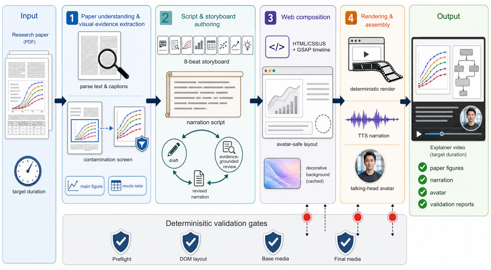

Turning Research Papers into Time-Scalable Explainer Videos
Junfeng Yan1, Biao Wu1, Meng Fang2, Ling Chen1
1Australian Artificial Intelligence Institute, University of Technology Sydney, Australia · 2University of Liverpool, Liverpool, United Kingdom
Overview
PaperReel is a system that converts a research paper into a narrated explainer
video of a caller-specified target duration. The montage below shows sixteen videos
sampled from our evaluation on 30 publicly available NLP papers from recent ACL-family
venues; every video was generated end-to-end from the paper's PDF, uses the paper's own
figures and tables as visual evidence, and is narrated by a synthesized voice with a
talking-head avatar.
System Design
PaperReel is built on HyperFrames' composition format and deterministic renderer,
and is implemented as an agent skill: a natural-language specification
(SKILL.md) defines the generation workflow, its quality rules, and its
validation gates, and any capable AI coding agent can execute it — Claude Code in our
implementation. The system turns a paper PDF into a narrated explainer video of a
caller-specified target duration (two minutes in all our experiments) by authoring an
inspectable HTML/CSS/JS web composition with the paper's own embedded figures. Rather
than generating slides or synthesizing frames, it extracts, validates, and reuses the
paper's own figures and tables as the primary evidence — with an explicit
figure-contamination screen — and a deterministic validation suite gates the workflow
so that layout and media defects are caught before the costly rendering and avatar
stages.

The PaperReel workflow. Paper understanding and visual evidence
extraction, script and storyboard authoring with evidence-grounded review, web composition
authoring, deterministic validation, and rendering with TTS narration and a talking-head
avatar.
1
Paper understanding
parse PDF · crop figures & tables · contamination screen
1 · Hook / Title · 0–10s Title card introducing the paper
2 · Problem · 10–25s Statement overlay motivating the problem
3 · Method · 25–55s The paper's own pipeline diagram
4 · Experiments · 55–70s The paper's main experimental figure
5 · Results · 70–90s Result figure or table with the key finding
6 · Contributions · 90–102s Cards summarizing the distinct contributions
7 · Insight · 102–112s Statement overlay on the broader implication
8 · Takeaway · 112–120s Closing card with the central message
Each beat's time allocation, anchoring evidence figure, and on-screen text budget are fixed by
the schema and scale with the target duration; the color theme is derived from the dominant
hue of the paper's main figure. A second evidence-grounded review pass checks factual grounding,
contribution coverage, and text–figure alignment before the narration is adopted.
Generated Explainer Videos
The following twenty videos are drawn from our evaluation on 30 publicly available NLP
papers from recent ACL-family venues. Each two-minute video was produced end-to-end by the
same system from the paper's PDF, with
GPT-5.5 as the backend language model under a fixed visual system. The videos are muted by
default; narration can be enabled with the volume control.
OctoToolsExtensible tool-based multi-agent framework for complex reasoning · arXiv:2502.11271
AgentRouterKnowledge-graph-guided LLM router for multi-agent QA · arXiv:2510.05445
NavA³Understand any instruction, navigate anywhere, find anything · arXiv:2508.04598
Paper2PosterMultimodal poster automation from scientific papers · arXiv:2505.21497
SFTMixElevating instruction tuning with a Mixup recipe · arXiv:2410.05248
ReEx-SQLExecution-aware reinforcement learning for text-to-SQL · arXiv:2505.12768